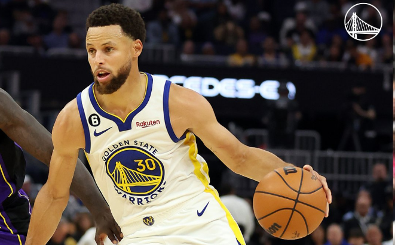

Os 3 maiores pontuadores de 3 pontos da historia da NBA
No mundo do basquete, a habilidade de acertar arremessos de três pontos é uma arte refinada. A NBA viu alguns dos maiores atiradores de longa distância em sua história, e entre eles estão Stephen Curry, Ray Allen e James Harden. Vamos explorar as estatísticas impressionantes desses jogadores e entender por que eles são considerados alguns dos maiores chutadores de três pontos de todos os tempos.
Stephen Curry
Com 3.437 cestas de três pontos em 42,8% de precisão, Stephen Curry é, sem dúvida, um dos maiores chutadores de longa distância da história da NBA. Sua habilidade de encontrar espaço e acertar arremessos de três pontos em situações apertadas é incomparável. Curry também possui um impressionante recorde de 90,9% na linha de lance livre, mostrando sua precisão não apenas de longe, mas também nos lances livres. O que torna Curry verdadeiramente revolucionário é sua capacidade de mudar a dinâmica de um jogo com seus arremessos de três pontos. Sua habilidade de se movimentar rapidamente sem a bola, combinada com seu alcance incrível, o torna uma ameaça constante de qualquer lugar da quadra. Ele não apenas dá espaçamento ao ataque de sua equipe, mas também força os defensores adversários a se estenderem, abrindo oportunidades para seus colegas de equipe.
Ray Allen
Ray Allen é uma lenda quando se trata de arremessos de três pontos. Ao longo de sua carreira, ele fez 2.973 cestas de três pontos com uma precisão de 40%. O que torna Allen tão especial é sua técnica impecável e consistência. Ele tinha a habilidade de acertar arremessos de três pontos mesmo sob pressão, muitas vezes em momentos cruciais do jogo.Além de seu talento puro, Allen também era conhecido por seu ético de trabalho exemplar e mentalidade calma nos momentos cruciais. Seu arremesso icônico em 2013, que ajudou o Miami Heat a forçar um jogo 7 nas Finais da NBA daquele ano, é uma lembrança vívida de sua habilidade de desempenhar sob pressão.
James Harden
James Harden é conhecido por sua habilidade única de criar espaço para seus arremessos de três pontos. Com 2.756 cestas de três pontos em sua carreira, Harden usa sua habilidade de manusear a bola de forma magistral para enganar os defensores e encontrar espaço para seus arremessos de longa distância. Sua capacidade de drible aliada a um arremesso de três pontos letal o torna uma ameaça multifacetada no ataque.Além de seus arremessos de três pontos, Harden também é um especialista em lances livres, com uma média de 86% de eficácia na carreira. Sua habilidade de desenhar faltas e converter lances livres torna difícil para os defensores contestá-lo sem cometer faltas.

Em resumo, Stephen Curry, Ray Allen e James Harden são exemplos notáveis de como o arremesso de três pontos se tornou uma habilidade fundamental no jogo moderno da NBA. Sua habilidade de converter arremessos de longa distância com consistência e precisão não apenas elevou o status deles como jogadores, mas também influenciou toda uma geração de atletas que buscam aprimorar suas habilidades além da linha de três pontos. Eles deixaram uma marca indelével na história da NBA como alguns dos maiores chutadores de três pontos que já jogaram o jogo.